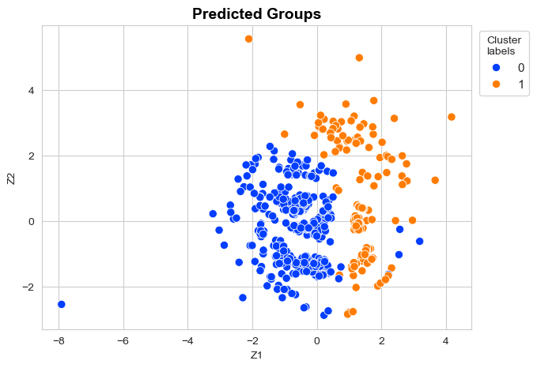
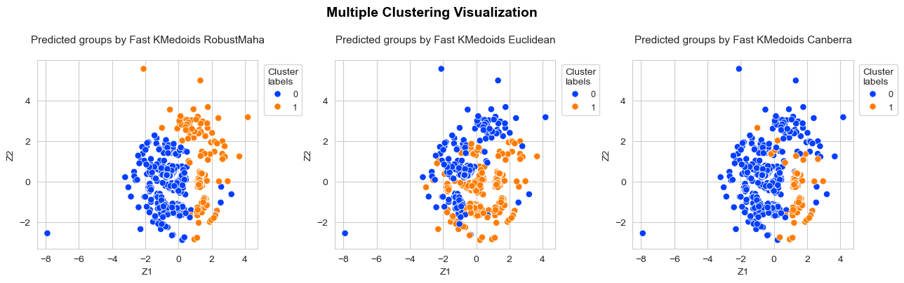

FastKmedoids Usage#
Requirements#
pip install FastKmedoids --upgrade
Requirement already satisfied: FastKmedoids in c:\users\fscielzo\anaconda3\lib\site-packages (0.0.22)Note: you may need to restart the kernel to use updated packages.
Collecting FastKmedoids
Downloading FastKmedoids-0.0.23-py3-none-any.whl.metadata (895 bytes)
Requirement already satisfied: polars in c:\users\fscielzo\anaconda3\lib\site-packages (from FastKmedoids) (0.19.1)
Requirement already satisfied: numpy in c:\users\fscielzo\anaconda3\lib\site-packages (from FastKmedoids) (1.24.3)
Downloading FastKmedoids-0.0.23-py3-none-any.whl (12 kB)
Installing collected packages: FastKmedoids
Attempting uninstall: FastKmedoids
Found existing installation: FastKmedoids 0.0.22
Uninstalling FastKmedoids-0.0.22:
Successfully uninstalled FastKmedoids-0.0.22
Successfully installed FastKmedoids-0.0.23
import polars as pl
from PyMachineLearning.preprocessing import encoder
from FastKmedoids.models import FastKmedoidsGG, KFoldFastKmedoidsGG, FastGG
from FastKmedoids.plots import clustering_MDS_plot
from sklearn.manifold import MDS
import seaborn as sns
sns.set_style('whitegrid')
Data processing#
madrid_houses_df = pl.read_csv('madrid_houses.csv')
columns_to_exclude = ['', 'id','sq_mt_allotment','floor', 'neighborhood', 'district']
madrid_houses_df = madrid_houses_df.select(pl.exclude(columns_to_exclude))
binary_cols = ['is_renewal_needed', 'has_lift', 'is_exterior', 'has_parking']
multi_cols = ['energy_certificate', 'house_type']
quant_cols = [x for x in madrid_houses_df.columns if x not in binary_cols + multi_cols]
encoder_ = encoder(method='ordinal')
encoded_arr = encoder_.fit_transform(madrid_houses_df[binary_cols + multi_cols])
cat_df = pl.DataFrame(encoded_arr)
cat_df.columns = binary_cols + multi_cols
cat_df = cat_df.with_columns([pl.col(col).cast(pl.Int64) for col in cat_df.columns])
quant_df = madrid_houses_df[quant_cols]
madrid_houses_df = pl.concat([quant_df, cat_df], how='horizontal')
madrid_houses_df.head()
shape: (5, 11)
| sq_mt_built | n_rooms | n_bathrooms | n_floors | buy_price | is_renewal_needed | has_lift | is_exterior | has_parking | energy_certificate | house_type |
|---|---|---|---|---|---|---|---|---|---|---|
| f64 | i64 | i64 | i64 | i64 | i64 | i64 | i64 | i64 | i64 | i64 |
| 64.0 | 2 | 1 | 1 | 85000 | 0 | 0 | 1 | 0 | 4 | 0 |
| 70.0 | 3 | 1 | 1 | 129900 | 1 | 1 | 1 | 0 | 0 | 0 |
| 94.0 | 2 | 2 | 1 | 144247 | 0 | 1 | 1 | 0 | 0 | 0 |
| 64.0 | 2 | 1 | 1 | 109900 | 0 | 1 | 1 | 0 | 0 | 0 |
| 108.0 | 2 | 2 | 1 | 260000 | 0 | 1 | 1 | 1 | 0 | 0 |
madrid_houses_df.shape
(21739, 11)
FastKmedoids#
class FastKmedoidsGG :
"""
Implements the Fast-K-medoids algorithm based on the Generalized Gower distance.
"""
def __init__(self, n_clusters, method='pam', init='heuristic', max_iter=100, frac_sample_size=0.1, random_state=123,
p1=None, p2=None, p3=None, d1='robust_mahalanobis', d2='jaccard', d3='matching',
robust_maha_method='trimmed', alpha=0.05, epsilon=0.05, n_iters=20, q=1,
fast_VG=False, VG_sample_size=1000, VG_n_samples=5, y_type=None, verbose=True):
"""
Constructor method.
Parameters:
n_clusters: the number of clusters.
method: the k-medoids clustering method. Must be in ['pam', 'alternate']. PAM is the classic one, more accurate but slower.
init: the k-medoids initialization method. Must be in ['heuristic', 'random']. Heuristic is the classic one, smarter burt slower.
max_iter: the maximum number of iterations run by k-medodis.
frac_sample_size: the sample size in proportional terms.
random_state: the random seed used for the (random) sample elements.
p1, p2, p3: number of quantitative, binary and multi-class variables in the considered data matrix, respectively. Must be a non negative integer.
d1: name of the distance to be computed for quantitative variables. Must be an string in ['euclidean', 'minkowski', 'canberra', 'mahalanobis', 'robust_mahalanobis'].
d2: name of the distance to be computed for binary variables. Must be an string in ['sokal', 'jaccard'].
d3: name of the distance to be computed for multi-class variables. Must be an string in ['matching'].
q: the parameter that defines the Minkowski distance. Must be a positive integer.
robust_maha_method: the method to be used for computing the robust covariance matrix. Only needed when d1 = 'robust_mahalanobis'.
alpha : a real number in [0,1] that is used if `method` is 'trimmed' or 'winsorized'. Only needed when d1 = 'robust_mahalanobis'.
epsilon: parameter used by the Delvin algorithm that is used when computing the robust covariance matrix. Only needed when d1 = 'robust_mahalanobis'.
n_iters: maximum number of iterations used by the Delvin algorithm. Only needed when d1 = 'robust_mahalanobis'.
fast_VG: whether the geometric variability estimation will be full (False) or fast (True).
VG_sample_size: sample size to be used to make the estimation of the geometric variability.
VG_n_samples: number of samples to be used to make the estimation of the geometric variability.
y_type: the type of response variable. Must be in ['quantitative', 'binary', 'multiclass'].
verbose: a boolean that controls whether certain info messages are printed or not.
"""
def fit(self, X, y=None, weights=None):
"""
Fit method: fitting the fast k-medoids algorithm to `X` (and `y` if needed).
Parameters:
X: a Pandas or Polars data-frame or a NumPy array. Represents a predictors matrix. Is required.
y: a Pandas or Polars series or a NumPy array. Represents a response variable. Is not required.
weights: the sample weights, if exists.
"""
def predict(self, X):
"""
Predict method: predicting clusters for `X` observation by assigning them to their nearest cluster (medoid) according to Generalized Gower distance.
Parameters:
X: a Pandas or Polars data-frame or a NumPy array. Represents a predictors matrix. Is required.
"""
fast_kmedoids = FastKmedoidsGG(n_clusters=3, method='pam', init='heuristic', max_iter=100, random_state=123,
frac_sample_size=0.01, p1=5, p2=4, p3=2,
d1='robust_mahalanobis', d2='jaccard', d3='matching',
robust_maha_method='trimmed', alpha=0.05, epsilon=0.05, n_iters=20)
fast_kmedoids.fit(X=madrid_houses_df)
Distance matrix size: (217, 217)
fast_kmedoids.labels
array([2, 1, 1, ..., 0, 0, 0], dtype=int64)
fast_kmedoids.labels.shape
(21739,)
fast_kmedoids.D_GG
array([[0. , 2.0632824 , 2.09686916, ..., 3.20285353, 1.84380918,
3.14611266],
[2.0632824 , 0. , 2.49128404, ..., 3.09380609, 3.01923008,
1.43032853],
[2.09686916, 2.49128404, 0. , ..., 2.81596982, 3.36492227,
2.98877842],
...,
[3.20285353, 3.09380609, 2.81596982, ..., 0. , 3.21190291,
2.87445442],
[1.84380918, 3.01923008, 3.36492227, ..., 3.21190291, 0. ,
2.97473498],
[3.14611266, 1.43032853, 2.98877842, ..., 2.87445442, 2.97473498,
0. ]])
fast_kmedoids.D_GG.shape
(217, 217)
KFold FastKmedoids#
class KFoldFastKmedoidsGG :
"""
Implements the K-Fold Fast-K-medoids algorithm based on the Generalized Gower distance.
"""
def __init__(self, n_clusters, method='pam', init='heuristic', max_iter=100, frac_sample_size=0.1, random_state=123,
p1=None, p2=None, p3=None, d1='robust_mahalanobis', d2='jaccard', d3='matching',
robust_maha_method='trimmed', alpha=0.05, epsilon=0.05, n_iters=20, q=1,
fast_VG=False, VG_sample_size=1000, VG_n_samples=5, n_splits=5, shuffle=True, kfold_random_state=123,
y_type=None, verbose=True) :
"""
Constructor method.
Parameters:
n_clusters: the number of clusters.
method: the k-medoids clustering method. Must be in ['pam', 'alternate']. PAM is the classic one, more accurate but slower.
init: the k-medoids initialization method. Must be in ['heuristic', 'random']. Heuristic is the classic one, smarter burt slower.
max_iter: the maximum number of iterations run by k-medodis.
frac_sample_size: the sample size in proportional terms.
random_state: the random seed used for the (random) sample elements.
p1, p2, p3: number of quantitative, binary and multi-class variables in the considered data matrix, respectively. Must be a non negative integer.
d1: name of the distance to be computed for quantitative variables. Must be an string in ['euclidean', 'minkowski', 'canberra', 'mahalanobis', 'robust_mahalanobis'].
d2: name of the distance to be computed for binary variables. Must be an string in ['sokal', 'jaccard'].
d3: name of the distance to be computed for multi-class variables. Must be an string in ['matching'].
q: the parameter that defines the Minkowski distance. Must be a positive integer.
robust_maha_method: the method to be used for computing the robust covariance matrix. Only needed when d1 = 'robust_mahalanobis'.
alpha : a real number in [0,1] that is used if `method` is 'trimmed' or 'winsorized'. Only needed when d1 = 'robust_mahalanobis'.
epsilon: parameter used by the Delvin algorithm that is used when computing the robust covariance matrix. Only needed when d1 = 'robust_mahalanobis'.
n_iters: maximum number of iterations used by the Delvin algorithm. Only needed when d1 = 'robust_mahalanobis'.
fast_VG: whether the geometric variability estimation will be full (False) or fast (True).
VG_sample_size: sample size to be used to make the estimation of the geometric variability.
VG_n_samples: number of samples to be used to make the estimation of the geometric variability.
y_type: the type of response variable. Must be in ['quantitative', 'binary', 'multiclass'].
n_splits: number of folds to be used.
shuffle: whether data is shuffled before applying KFold or not, must be in [True, False].
kfold_random_state: the random seed for KFold if shuffle = True.
verbose: a boolean that controls whether certain info messages are printed or not.
"""
def fit(self, X, y=None, weights=None):
"""
Fit method: fitting the fast k-medoids algorithm to `X` (and `y` if needed).
Parameters:
X: a Pandas or Polars data-frame or a NumPy array. Represents a predictors matrix. Is required.
y: a Pandas or Polars series or a NumPy array. Represents a response variable. Is not required.
weights: the sample weights, if exists.
"""
def predict(self, X):
"""
Predict method: predicting clusters for `X` observation by assigning them to their nearest cluster (medoid) according to Generalized Gower distance.
Parameters:
X: a Pandas or Polars data-frame or a NumPy array. Represents a predictors matrix. Is required.
"""
kfold_fast_kmedoids = KFoldFastKmedoidsGG(n_clusters=3, method='pam', init='heuristic', max_iter=100, random_state=123,
frac_sample_size=0.1, n_splits=10, shuffle=True, kfold_random_state=123,
p1=5, p2=4, p3=2, d1='robust_mahalanobis', d2='jaccard', d3='matching',
robust_maha_method='trimmed', alpha=0.05, epsilon=0.05, n_iters=20,
fast_VG=False, VG_sample_size=1000, VG_n_samples=5)
kfold_fast_kmedoids.fit(X=madrid_houses_df)
Num.Folds: 10. Fold size: 2173.
Distance matrix size: 218 (0.1*2173)
Clustering Fold 0
Distance matrix size: (217, 217)
Clustering Fold 1
Distance matrix size: (217, 217)
Clustering Fold 2
Distance matrix size: (217, 217)
Clustering Fold 3
Distance matrix size: (217, 217)
Clustering Fold 4
Distance matrix size: (217, 217)
Clustering Fold 5
Distance matrix size: (217, 217)
Clustering Fold 6
Distance matrix size: (217, 217)
Clustering Fold 7
Distance matrix size: (217, 217)
Clustering Fold 8
Distance matrix size: (217, 217)
Clustering Fold 9
Distance matrix size: (217, 217)
X_medoids size: (30, 11)
Distance matrix size: (24, 24)
kfold_fast_kmedoids.labels
array([0, 1, 1, ..., 1, 1, 1])
kfold_fast_kmedoids.labels.shape
(21739,)
Clustering Visualization#
def clustering_MDS_plot(X_mds, y_pred, y_true=None, title='', accuracy=None, time=None, figsize=(8, 5), n_rows=2, bbox_to_anchor=(1.2, 1),
title_size=13, title_weight='bold', points_size=45, title_height=0.98, subtitles_size=12, subtitle_weight='bold',
hspace=0.8, wspace=0.4, save=False, file_name=None, legend_size=9):
"""
Displays the MDS plot for one or several clustering configurations,
differentiating the cluster labels and the real groups, if they are known.
Parameters (inputs)
----------
X_mds: a numpy array with the MDS matrix for the distance matrix used in the considered clustering configuration.
y_pred: a numpy array with the predictions of the response for the single case or a dictionary with those arrays as items for the multiple case.
y_true: a numpy array with the true values of the response. Not required.
title: the title of the plot.
accuracy: the accuracy of the clustering algorithm, if computed. Not required.
time: the execution time of the clustering algorithm, if computed. Not required.
figsize: the size of the plot.
bbox_to_anchor: the size of the legend box.
title_fontsize: the size of the font of the title.
title_weight: the weight of the title.
points_size: the size of the points of the plot.
title_height: the height of the tile of the plot.
subtitles_size: subtitles sizes, for the multiple case.
subtitle_weight: subtitle weight, for the multiple case.
hspace: height space between the subplots, for the multiple case.
wspace: width space between the subplots, for the multiple case.
legend_size: size of the legend.
save: whether the plot is saved or not.
file_name: file name if the plot is saved.
Returns (outputs)
-------
The described plot.
"""
Single clustering method#
fast_kmedoids = FastKmedoidsGG(n_clusters=2, method='pam', init='heuristic', max_iter=100, random_state=123,
frac_sample_size=0.03, p1=5, p2=4, p3=2,
d1='robust_mahalanobis', d2='jaccard', d3='matching',
robust_maha_method='trimmed', alpha=0.05, epsilon=0.05, n_iters=20)
fast_kmedoids.fit(X=madrid_houses_df)
Distance matrix size: (652, 652)
mds = MDS(n_components=2, dissimilarity='precomputed', random_state=123)
X_mds = mds.fit_transform(fast_kmedoids.D_GG)
c:\Users\fscielzo\anaconda3\Lib\site-packages\sklearn\manifold\_mds.py:298: FutureWarning: The default value of `normalized_stress` will change to `'auto'` in version 1.4. To suppress this warning, manually set the value of `normalized_stress`.
warnings.warn(
clustering_MDS_plot(X_mds=X_mds, y_pred=fast_kmedoids.labels[fast_kmedoids.sample_index],
y_true=None, title='Predicted Groups', title_size=14, title_height=1,
accuracy=None, time=None, points_size=55, legend_size=11,
figsize=(7,5), bbox_to_anchor=(1.15, 1))
print(f'Number of data points plotted: {len(fast_kmedoids.D_GG)}')

Number of data points plotted: 652
Multiple clustering method#
mds = MDS(n_components=2, dissimilarity='precomputed', random_state=123)
fastGG = FastGG(frac_sample_size=0.03, random_state=123, p1=5, p2=4, p3=2,
d1='robust_mahalanobis', d2='jaccard', d3='matching',
robust_maha_method='trimmed', alpha=0.05)
fastGG.compute(madrid_houses_df)
X_mds = mds.fit_transform(fastGG.D_GG)
Distance matrix size: (652, 652)
c:\Users\fscielzo\anaconda3\Lib\site-packages\sklearn\manifold\_mds.py:298: FutureWarning: The default value of `normalized_stress` will change to `'auto'` in version 1.4. To suppress this warning, manually set the value of `normalized_stress`.
warnings.warn(
fast_kmedoids_RM = FastKmedoidsGG(n_clusters=2, method='pam', init='heuristic', max_iter=100, random_state=123,
frac_sample_size=0.03, p1=5, p2=4, p3=2,
d1='robust_mahalanobis', d2='jaccard', d3='matching',
robust_maha_method='trimmed', alpha=0.05, epsilon=0.05, n_iters=20)
fast_kmedoids_RM.fit(X=madrid_houses_df)
Distance matrix size: (652, 652)
fast_kmedoids_euclidean = FastKmedoidsGG(n_clusters=2, method='pam', init='heuristic', max_iter=100, random_state=123,
frac_sample_size=0.03, p1=5, p2=4, p3=2,
d1='euclidean', d2='sokal', d3='matching')
fast_kmedoids_euclidean.fit(X=madrid_houses_df)
Distance matrix size: (652, 652)
fast_kmedoids_canberra = FastKmedoidsGG(n_clusters=2, method='pam', init='heuristic', max_iter=100, random_state=123,
frac_sample_size=0.03, p1=5, p2=4, p3=2,
d1='canberra', d2='jaccard', d3='matching')
fast_kmedoids_canberra.fit(X=madrid_houses_df)
Distance matrix size: (652, 652)
y_pred = {'Fast KMedoids RobustMaha': fast_kmedoids_RM.labels[fastGG.sample_index],
'Fast KMedoids Euclidean': fast_kmedoids_euclidean.labels[fastGG.sample_index],
'Fast KMedoids Canberra': fast_kmedoids_canberra.labels[fastGG.sample_index]}
clustering_MDS_plot(X_mds=X_mds, y_pred=y_pred, y_true=None, title='Multiple Clustering Visualization', accuracy=None, time=None,
figsize=(15, 3.5), n_rows=1, bbox_to_anchor=(1.22, 1),
title_size=14, title_weight='bold', points_size=45, title_height=1.1,
subtitles_size=13, subtitle_weight='bold',
hspace=0.8, wspace=0.35, save=False, file_name=None, legend_size=9)
